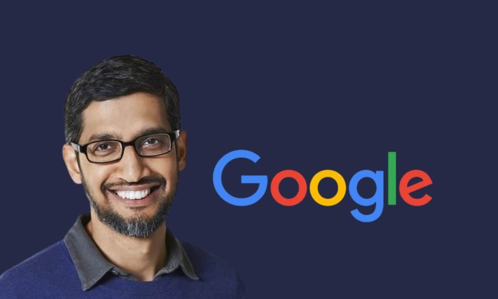

- Pichai Sundararajan (born June 10, 1972), better known as Sundar Pichai, is an Indian-American business executive.He is the chief executive officer (CEO) of Alphabet Inc. and its subsidiary Google.
- Born in Madurai, India, Pichai earned his degree from IIT Kharagpur in metallurgical engineering.
- Moving to the United States, he attained an M.S. from Stanford University in materials science and engineering and further attained an MBA from the Wharton School of the University of Pennsylvania, where he was named a Siebel Scholar and a Palmer Scholar, respectively.
- Pichai began his career as a materials engineer. Following a short stint at the management consulting firm McKinsey & Co., Pichai joined Google in 2004
- where he led the product management and innovation efforts for a suite of Google's client software products, including Google Chrome and Chrome OS, as well as being largely responsible for Google Drive.
- In addition, he went on to oversee the development of other applications such as Gmail and Google Maps. In 2010, Pichai also announced the open-sourcing of the new video codec VP8 by Google and introduced the new video format, WebM.
- The Chromebook was released in 2012. In 2013, Pichai added Android to the list of Google products that he oversaw.
- Pichai was selected to become the next CEO of Google on August 10, 2015, after previously being appointed Product Chief by CEO Larry Page.
- On October 24, 2015, he stepped into the new position at the completion of the formation of Alphabet Inc., the new holding company for the Google company family.
- Pichai is married to Anjali Pichai and has two children. His recreational interests include cricket and football.
- He was appointed as Google CEO in the year 2015. As per media reports, Pichai earned a salary of over $1 billion (which is 100 crores in INR) every year between 2015 and 2020. Reports also suggest that Pichai's base salary is $2 million (which is around Rs 20 lakh).
- he was promoted as a Senior Vice President followed by Product Chief Officer for Google as well as the Android Smartphone Operating System.
- Larry Page and Sergey Brin, who were fascinated by Sundar Pichai education and his overwhelming contribution in the $3.2 Billion’s turnover for the year 2014, decided to step down from the position of CEO and handed over the legacy to Sundar Pichai in 2015.
- The August of 2015 came as no surprise when Sundar was appointed as the CEO of Google along with this took place the launch of Alphabet Co. which is now the parent company of Google. His technical and visionary skills paved the skyrocketing career for him and he also grabbed the position of CEO of Alphabet in 2019
- In 2022, Pichai received the Padma Bhushan from the Government of India, its third-highest civilian award.